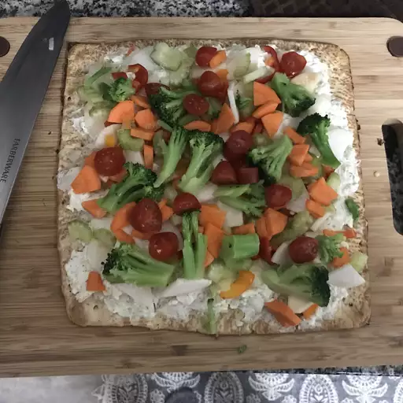

Veggie Pizza

Description
This Veggie pizza is sure to make any vegan love eating the food you make!
Ingredients
- 2 Crescent rolls
- 1 cup sour cream
- Broccoli
- onion
Steps
- Preheat the oven to 350 degrees F (175 degrees C). Spray a jelly roll pan with
nonstick cooking spray.
- Press crescent roll dough into the prepared jelly roll pan to form a crust. Let
stand 5 minutes. Pierce with a fork.
- Bake in the preheated oven until dough is fully cooked and golden brown, about 10 minutes. Let cool completely.
- Combine sour cream, cream cheese, ranch seasoning mix, dill, and garlic salt in a medium mixing bowl. Spread the cream cheese mixture on top of cooled crust. Arrange broccoli, radish, onion, bell pepper, carrot, and celery on top of the cream cheese mixture.
- Cover and let chill, 1 to 2 hours. Cut chilled pizza into 16 squares to serve.